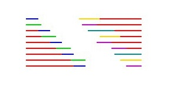

2015.09.28-29
状态不太好貌似没有之前好…需要调整调整。
Day 1
DP全套…（DP是永久的痛——
预计得分：120
实际得分：134
Pf
-
[Description]
往一个长度为P的序列填数，每个位置可以填1~n，整个序列要求每个元素都要用到。
问任意两个相同元素的距离都大于m的方案有多少个。 -
[Hint]
-
[Solution]
先计算不计顺序的方案，最后乘上n!
设f[i][j]表示前i个位置总共填j种元素的合法方案数，转移方程为
表示第i个位置填入一个新元素，填入一个已有元素，但为了满足题意，最后m种元素是不能选的，因此有(j-m)种方案。
答案为.
- [Summary]
那道题以为是一道组合数学，就一直想着总方案-不合法方案，半天也没做出来，以后思维还是要发散些，不能凭感觉确定一道题的考点…
Guard
-
[Description]
初始有容量为K的包，要依次完成n个任务，每个任务成功的概率为pi/100，每个任务有个属性值ai，为-1~inf的一个int，若为-1，任务成功后获得一块大小为1的地图残片，否则获得一个ai的包。整个任务取胜，要求途中获得的所有地图残片都能放进初始和获得的包中，且获胜局数大于L。现在问任务取胜的概率。 -
[Hint]
-
[Solution]
设计三维状态：玩完第i局有总容量为j的背包取得了k场胜利的概率，分别按第i局是否取胜转移即可。
其中第二维j的取值范围为-n~n，否则为恒有解或恒无解，不用考虑。
时间复杂度为 -
[Summary]
直接打了个深搜…
Hamilton
-
[Description]
给出一个结点数不大于200的无向图，求图中简单环的个数，其中没有自环和重边，时限2s。 -
[Solution]
设计状态：环中点集和“终点”编号，这样容易设计一个的转移。
可以更优：每次从编号最小的一个转移过来即可，时间复杂度为。
Cg
-
[Description]
物品，第i个物品的价值为，选出价值尽量高的物品且所有连续被选的物品不超过. -
[Solution]
问题等价于选价值尽量小的物品且每连续的K个物品中至少有一个被选。
设表示这如上选前i头牛，且选了第i头牛的最小价值，转移为
用单调队列优化一下就可以过了！
- [Summary]
唯一一道AC的题…
Day 2
比昨天的考试来得要深刻一些…
预计得分：240
实际得分：150
Job
-
[Description]
一个工厂所运行的生产线对每个工件有2道工序A和B，每道工序有一定数量的机器可以实现，数量为ma和mb，分别定义为A类机和B类机。
对于每个工件，都必须先经工序A处理，再经工序B处理，而每个机器可以独立的，同时地工作，每个机器工作需要的时间不一样。
现有n个工件，找出最早的时间让所有工件完成所有工序A和最早时间完成两道工序。 -
[Hint]
-
[Solution]
过第一道工序很好想：因为每个物品源源不断的来，每次只要贪心选择结束时间最先的机器完成就可以了。
这样算出第一问（40分）。
后面一问怎么考虑呢？每个物品开始加工的时间不一样，不好考虑。我们从后面开始考虑，因为最后时间只以最后一个机器完成时间为准，我们假设每个物品从这个点源源不断来，这并不会影响答案，算出每个物品“最前”需要在多久之前开始，两道工序的完成情况如下图：

我们需要两块“合拢”的宽度最小，所以需要保证最后出来的尽快完成，从A工序中最后出来的物品开始考虑起就可以了，每个物品两个工序完成总时间的最大值即使答案。
- [Summary]
稍微想一下应该就能脑补出第二问了…
Sort
-
[Description]
有n个数a1…an，已知m个一些它们之间的大小关系，形如ai>=aj。
把这n个数分成尽量少个集合，使得每个集合内的任意两个数的大小关系都是未知的。 -
[Hint]
-
[Solution]
每个关系建一条i->j的有向边，将强连通分量缩点，算完后点权为强连通分量的大小。这个图中的点权最大链的点权大小就是问题的答案。
正确性应该非常显然吧er… -
[Summary]
最后悔的一道题…
看完题立刻秒出了正解…【Tarjan+DFS直接来啊！】然后遇上大问题了…Tarjan不记得打了……
花了半个小时脑补了一下，虽然差不多了，然而还是有些小问题的，最后还有10分也是个安慰…
要着手开始复习一下所有学过的知识。
Permutation
-
[Description]
对于一个排列A，定义，如F(2 3 1)=2.
求对于n的全排列中F值为m的个数。 -
[Hint]
-
[Solution]
递推式：
右边三个式子跟最后一个元素放的位置有关，比较好脑补。
据说还有很多人打表找到了规律……
递推或者记忆化搜索一下即可。
- [Summary]
题面写错了数据范围好坑啊…还好没有纠结优化，打了个5000*5000的记忆化就走人了…
Library
一道题意复杂代码恶心的水题…暂时放疗。
总结
感觉考试技能还是有所提升，如果之前所有学过的东西都能了然于胸，感觉结果也会非常兹磁噢！